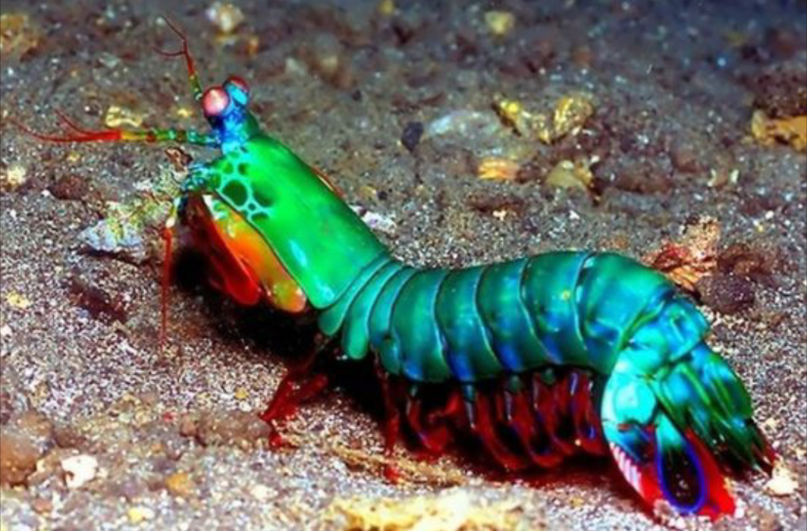

Fatos sobre o Stomatopoda
Informações gerais
| Nome científico: | Odontodactylus scyllarus |
| Reino: | Animalia |
| Filo: | Arthropoda |
| Subfilo: | Crustacea |
| Classe: | Malacostraca |
| Subclasse: | Hoplocarida |
| Ordem: | Stomatopoda |
| Nome científico: | Odontodactylus scyllarus |
| Reino: | Animalia |
| Filo: | Arthropoda |
| Subfilo: | Crustacea |
| Classe: | Malacostraca |
| Subclasse: | Hoplocarida |
| Ordem: | Stomatopoda |
Nossos olhos possuem células receptoras da luz que nos permitem enxegar cores e ambientes escuros. O ser humano possui trê tipos de cones (células responsável pela percepção das cores) correspondente ao vermelho, verde e azul.
Já os estomatópodes possuem de 12 a 16 cones, ou seja, são capazes de enxegar diversas outras cores que o cérebro humano não é capaz de processar.

Também conhecido como camarão-louva-a-deus-palhaço, possui um dos mais rápidos e violentos golpes do mundo animal. Seu soco possui uma aceleração equivalente a um tiro de calibre 22, e exerce uma pressão de 60 kg/cm². Já fora resgistrado um ataque com uma velocidade de 80 km/h.
Dito isso, esse animal consegue quebrar a carapaça de um caranguejo, conchas duras e calcificadas de gastrópodes, e até mesmo vidro reforçado de um aquário.
https://theoatmeal.com/comics/mantis_shrimp
https://www.nationalgeographic.com/science/article/natures-most-amazing-eyes-just-got-a-bit-weirder
https://pt.wikipedia.org/wiki/Odontodactylus_scyllarus
https://pt.wikipedia.org/wiki/Stomatopoda
https://pt.khanacademy.org/science/6-ano/vida-e-evolucao-a-visao/o-olho/a/o-olho-humano-e-a-visao
https://www.w3schools.com/html/html_iframe.asp
https://www.w3schools.com/css/css_margin.asp
https://www.w3schools.com/css/css_link.asp
https://www.w3schools.com/css/css_align.asp
Ademais, foi utilizado como referência o código desenvolvido pelo professor Andre Noel, durante a aula 3.4 de HTML Semântico.